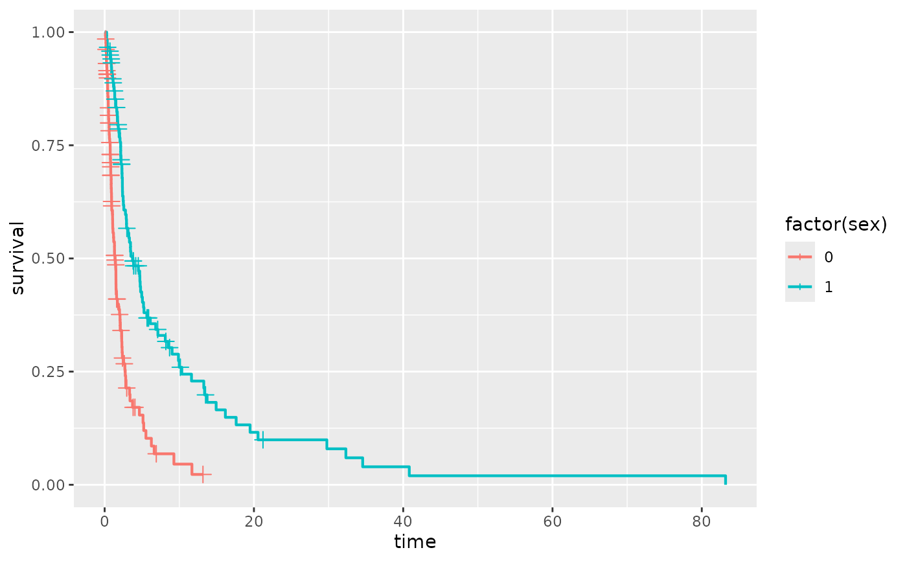

Adds tick marks to a Kaplan Meier Estimate of Survival
stat_kmticks(
mapping = NULL,
data = NULL,
geom = "kmticks",
position = "identity",
show.legend = NA,
inherit.aes = TRUE,
trans,
...
)Set of aesthetic mappings created by aes(). If specified and
inherit.aes = TRUE (the default), it is combined with the default mapping
at the top level of the plot. You must supply mapping if there is no plot
mapping.
The data to be displayed in this layer. There are three options:
If NULL, the default, the data is inherited from the plot
data as specified in the call to ggplot().
A data.frame, or other object, will override the plot
data. All objects will be fortified to produce a data frame. See
fortify() for which variables will be created.
A function will be called with a single argument,
the plot data. The return value must be a data.frame, and
will be used as the layer data. A function can be created
from a formula (e.g. ~ head(.x, 10)).
The geometric object to use to display the data, either as a
ggproto Geom subclass or as a string naming the geom stripped of the
geom_ prefix (e.g. "point" rather than "geom_point")
Position adjustment, either as a string naming the adjustment
(e.g. "jitter" to use position_jitter), or the result of a call to a
position adjustment function. Use the latter if you need to change the
settings of the adjustment.
logical. Should this layer be included in the legends?
NA, the default, includes if any aesthetics are mapped.
FALSE never includes, and TRUE always includes.
It can also be a named logical vector to finely select the aesthetics to
display.
If FALSE, overrides the default aesthetics,
rather than combining with them. This is most useful for helper functions
that define both data and aesthetics and shouldn't inherit behaviour from
the default plot specification, e.g. borders().
Transformation to apply to the survival probabilities. Defaults to "identity". Other options include "event", "cumhaz", "cloglog", or define your own using trans_new.
Other arguments passed to survfit.formula
a data.frame with additional columns:
x in data
Kaplan-Meier Survival Estimate at x
This stat is for computing the tick marks for a Kaplan-Meier survival estimate for
right-censored data. The tick marks will appear at each censoring time which is also
not a death time, which is the default for plot.survfit.
It requires the aesthetic mapping x for the
observation times and status which indicates the event status,
normally 0=alive, 1=dead. Other choices are TRUE/FALSE (TRUE = death) or 1/2
(2=death).
stat_kmticks understands the following aesthetics (required aesthetics
are in bold):
time The survival times
status The censoring indicator, see Surv for more information.
alpha
color
linetype
size
library(ggplot2)
sex <- rbinom(250, 1, .5)
df <- data.frame(time = exp(rnorm(250, mean = sex)), status = rbinom(250, 1, .75), sex = sex)
ggplot(df, aes(time = time, status = status, color = factor(sex))) +
stat_km() + stat_kmticks()
#> Warning: The following aesthetics were dropped during statistical transformation: status
#> ℹ This can happen when ggplot fails to infer the correct grouping structure in
#> the data.
#> ℹ Did you forget to specify a `group` aesthetic or to convert a numerical
#> variable into a factor?
#> Warning: The following aesthetics were dropped during statistical transformation: status
#> ℹ This can happen when ggplot fails to infer the correct grouping structure in
#> the data.
#> ℹ Did you forget to specify a `group` aesthetic or to convert a numerical
#> variable into a factor?
